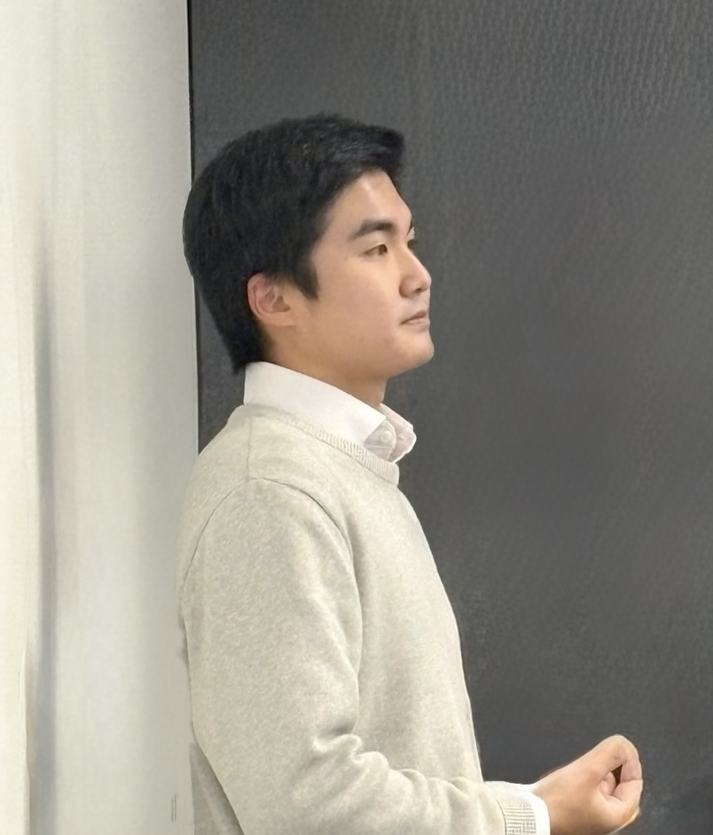
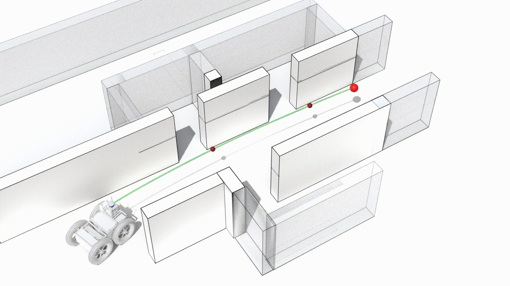
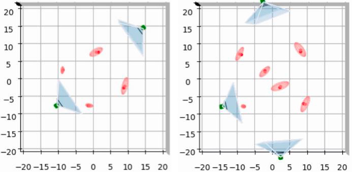
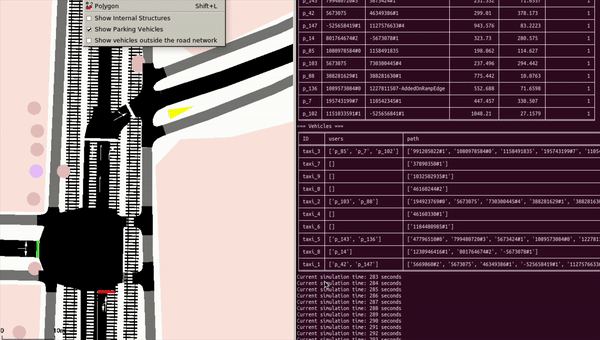

|
Seungjae Baek email: seungjab{at}andrew{dot}cmu{dot}edu · qortmdwo9706{at}gmail{dot}com I am a master's student in the Graduate School of Artificial Intelligence (AIGS) at Ulsan National Institute of Science and Technology (UNIST), advised by Professor Jeong hwan Jeon. I am also a visiting researcher at the Carnegie Mellon University Robotics Institute (CMU RI), collaborating with Professor Sebastian Scherer in the AirLab. My research focuses on informative path planning for robots, multi-robot systems, reinforcement learning, and reducing uncertainty in robotic decision-making. CV / GitHub / Google Scholar / LinkedIn |
 |
News
|
Publications |
|  |
Seungjae Baek*, Brady Moon*, Seungchan Kim*, Muqing Cao, Cherie Ho, Sebastian Scherer, Jeong hwan Jeon (*: Equal contributions) IEEE/RSJ International Conference on Intelligent Robots and Systems (IROS) 2025 paper | GitHub |
|  |
Kangbeen Lee*, Seungjae Baek*, Philjoon Jung, Tae-Hyun Kim, Jeong hwan Jeon (*: Equal contributions) Journal of Institute of Control, Robotics and Systems, 30(6), 587–595, 10.5302/J.ICROS.2024.24.0009 paper | GitHub |
Preprints |
|
Projects |
|  |
Jungeun Lee*, Seungjae Baek*, Sunhwi Kim, Chanju Kim, Seongjae Lee, Jeong hwan Jeon (*: Equal contributions) Under revision |

|
Project-Based Learning (PBL) course MEN491, Feb. 2023 – Jul. 2023 |
Teaching & Working Experiences |
 |
ITP117 Introduction to AI Programming II Ulsan National Institute of Science and Technology Head Teaching Assistant, Spring 2024 EEE351 Automatic Control Ulsan National Institute of Science and Technology Student Organization's Student Lecturer, Fall 2022 |
|
Clinomics Inc. Project-Based Learning (PBL) Teaching Assistant, Feb. 2023 – Jul. 2023 |
Achievements |
|
IEEE IES SYPA Travel Award (IROS 2025) ($1,500) — IEEE Industrial Electronics Society
Korean Government Scholarship Program for Study Overseas (total $150,000) — Government of the Republic of Korea Industrial Innovation Talent Growth Support (Overseas Linkage) — Korea University ($21,500; funding for visiting research at CMU) AI Excellence Global Innovative Leader Education Fellowship — Sogang University ($40,000 including tuition; funding for visiting research at CMU) Government-funded Graduate Scholarship (fully funded) UNIST Academic Performance Scholarship (4-year, fully funded) Undergraduate Research Excellent Poster Session Award |
|
Website Template from Jon Barron. |